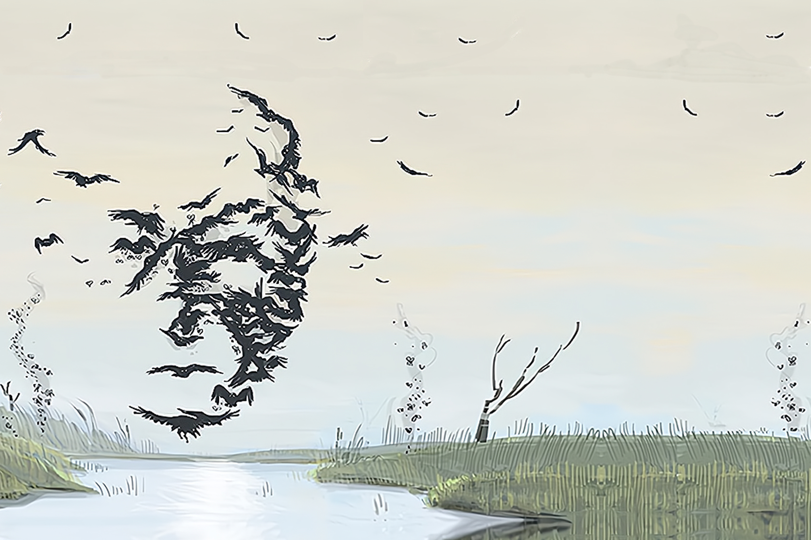

Many Minds Move as One
A Spirit of flocks, swarms, schools and packs, where the whole moves together in concert to accomplish what the individuals in it could not do alone. Unlike Weaves a Web of Souls, its nature leans towards smaller and simpler creatures, and it regards other sorts of animals - including humans - as bizarrely alien in their individuality; while it will communicate with the Dahan, it has shown no ability (or inclination) to integrate them into itself.
While it is willing to sacrifice individuals to protect the whole, it is not a Spirit of sacrifice per se - that is a tactic it employs, not the essence of
its nature.
SETUP:
Put 1 {presence} and 1 {beasts} on your starting board, in a land with {beasts}. Note that you have 5 Unique Power Cards.
Play Style:
Requires heavy spatial thought for {beasts} movement, due to its improved Push/Gather and large numbers of {beasts}.
Has no offense to start with, but an excellent stalling defense combined with {fear-icon} generation; outright Fear victories may be plausible in smaller games. Both Fear Cards and {beasts} events are unpredictable, however, so swings of fortune are apt to be more relevant than usual.
COMPLEXITY
Moderate
|
Summary of Powers
|
|
|
|
|
|
|
OFFENSE
|
CONTROL
|
FEAR
|
DEFENSE
|
UTILITY
|